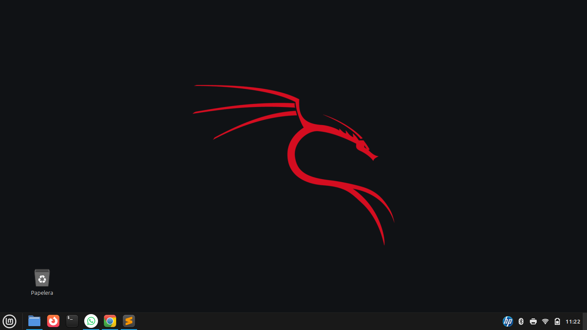

Crecimiento de Canal de YouTube
Estrategia de crecimiento y optimización de contenido para canales de turismo enfocados en Machu Picchu y destinos del Cusco, utilizando contenido en formato corto y optimización SEO para aumentar visibilidad y alcance.
Resultados principales
240+
Videos publicados
1,682,137+
Visualizaciones
44,881+
Horas de visualización
4,182+
Nuevos suscriptores
Contexto del proyecto
El objetivo del proyecto fue incrementar la visibilidad y el alcance de canales de turismo en YouTube, utilizando estrategias de contenido optimizadas para el algoritmo de la plataforma.
El enfoque principal fue la producción de videos en formato Shorts, aprovechando el sistema de descubrimiento de YouTube para alcanzar audiencias interesadas en destinos turísticos de Cusco y Machu Picchu.
Mi rol
Responsable de la estrategia y ejecución del crecimiento del canal.
Actividades principales:
- planificación de contenido
- producción de videos cortos
- optimización SEO de publicaciones
- análisis de métricas de rendimiento
- optimización de CTR
Estrategia aplicada
Para mejorar el rendimiento del canal se implementaron las siguientes estrategias:
- Producción constante de contenido
- Publicación continua de videos cortos optimizados para el algoritmo de YouTube Shorts.
- Optimización SEO
- Optimización de títulos, descripciones y etiquetas para mejorar la visibilidad en búsquedas relacionadas con turismo.
- Uso de inteligencia artificial
- Generación de guiones y copys para acelerar la producción de contenido.
- Optimización visual
- Uso de imágenes y videos atractivos de destinos turísticos para mejorar retención y clics.
- Análisis de métricas
- Monitoreo constante de métricas como:
- visualizaciones
- impresiones
- CTR
- crecimiento de suscriptores
- Esto permitió identificar los formatos de contenido con mejor rendimiento.
- Monitoreo constante de métricas como:
Resultados obtenidos
La implementación de esta estrategia generó un crecimiento significativo en el canal principal.
Resultados alcanzados:
- más de 1.6 millones de visualizaciones
- más de 44 mil horas de visualización
- crecimiento de 3,000 a casi 9,000 suscriptores
- más de 3.8 millones de impresiones
- CTR promedio de 5.3%
Estos resultados reflejan una mejora en la visibilidad del contenido y en el alcance de la audiencia interesada en turismo en Cusco y Machu Picchu.
Herramientas utilizadas
Insights del proyecto
- El contenido en formato Shorts permitió alcanzar nuevas audiencias rápidamente gracias al sistema de descubrimiento de YouTube.
- Los videos que mostraban paisajes impactantes y datos curiosos sobre destinos turísticos generaron mayor retención y más interacciones.
- La combinación de publicación constante y optimización SEO permitió mantener un crecimiento sostenido del canal.
